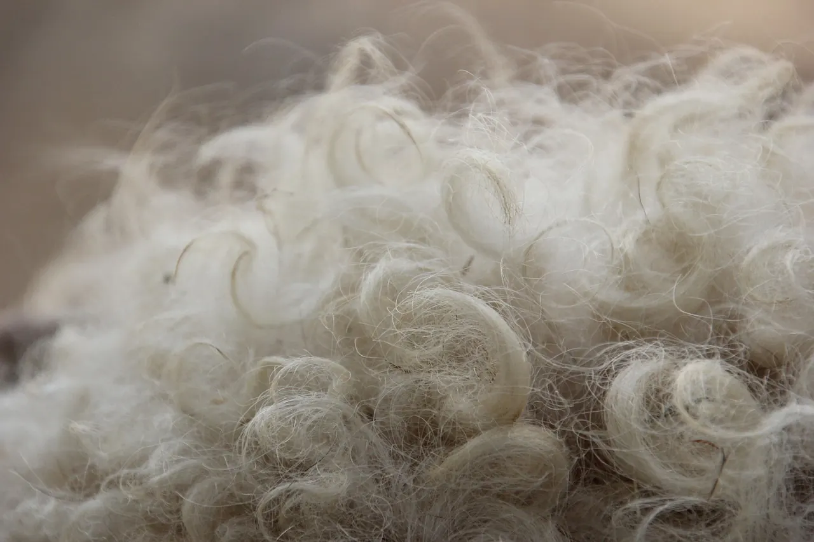

Yün yorganda yatmanın faydaları: ne gerçek, ne abartı?
Yün yorgan neden sıcak tutar ama terletmez? Nem, ısı dengesi ve uyku üzerine araştırmalar ne diyor; neyi bilmiyoruz?

Korkuteli'de dükkâna gelen müşterilerin çoğu aynı cümleyle başlar: "Annemin yün yorganı gibisi yok." Bu yazıda o hissin arkasında ne olduğunu, yani yünün lif olarak gerçekten neler yaptığını ve hangi iddiaların abartı olduğunu anlatıyoruz.
Yün lifi neden farklı?
Yün, koyunun bedenini hem soğuktan hem sıcaktan korumak için gelişmiş bir lif. Lifin kıvırcık yapısı (kıvrım) aralarında çok sayıda küçük hava cebi bırakır. Durgun hava iyi bir yalıtkandır; yün yorganın sıcak tutmasının ana nedeni budur.
Yünü pamuktan ve sentetikten ayıran ikinci özellik nem davranışıdır. Yün lifi, ıslak hissettirmeden kendi ağırlığının yaklaşık üçte birine varan su buharını içine alabilir (Uluslararası Yün Tekstil Örgütü IWTO ve Woolmark verileri). Uykuda vücut terler; yün bu nemi lifin içine çeker, sonra yavaşça dışarı bırakır. Bu yüzden yün yorganın altında "boğulma", yapış yapış olma hissi sentetik yorgana göre daha az olur.
Isı dengesi: hem sıcak hem serin
Yün nem çekerken çok az miktarda ısı açığa çıkarır, nem bıraktığında ise serinletir. Bu fiziksel özellik yünün "ısıyı dengeler" diye anlatılmasının temelidir. Pratikte şu anlama gelir: yün yorgan soğuk odada iyi ısıtır, ılık odada da sentetik bir yorgan kadar bunaltmaz. Yine de yaz sıcağında kalın bir yün yorgan elbette sıcak gelir; mevsime göre ağırlık seçmek gerekir (yorgan seçimi rehberimiz).
Araştırmalar uyku hakkında ne diyor?
Sidney Üniversitesi'nde yapılan küçük bir laboratuvar çalışmasında (Shin ve arkadaşları, Nature and Science of Sleep, 2016) gönüllüler yün, pamuk ve polyester uyku kıyafetleriyle 17 °C ve 22 °C'de uyutuldu. 17 °C'de yün kıyafetle uykuya dalma süresi daha kısa ölçüldü. Bu sonuç ilginç ama dikkatli okunmalı:
- Çalışmada yorgan değil, uyku kıyafeti ve yatak örtüsü test edildi.
- Katılımcı sayısı azdı ve çalışmayı yün sektörü destekledi.
- "Yün yorgan uykusuzluğu tedavi eder" sonucu çıkarılamaz. Söylenebilecek olan şu: doğru ısıdaki, nefes alan bir yatak takımı rahat uykuya yardımcı olabilir.
"Yün enerji verir", "fıtığa iyi gelir" sözleri
Dükkânda bu cümleleri sık duyarız. Büyüklerimizin yün yorgana, yün yatağa olan güveni yılların deneyiminden gelir ve saygıyı hak eder. Ama bir esnaf olarak dürüst olmamız gerekir: yünün "enerji verdiğini" ya da fıtık, romatizma gibi rahatsızlıkları iyileştirdiğini gösteren bilimsel bir kanıt yok. Yünün sağladığı şey sıcaklık ve kuruluk. Ağrısı olan biri sıcak ve kuru bir yatakta daha rahat hissedebilir; bu bir konfor meselesidir, tedavi değil. Bel, boyun ya da eklem ağrısı varsa mutlaka doktorunuza danışın. Bu konuyu ayrıca "enerji alır, fıtığa iyi gelir" yazımızda ayrıntılı anlattık.
Yün yorganın gerçek avantajları
- Sıcak tutar: Hava cepleri sayesinde kışın en sıcak dolgulardan biridir.
- Nemi yönetir: Terlemeyi lifin içine alır, yorganın içi ıslanmaz.
- Uzun ömürlüdür: İyi yün, birkaç yılda bir atılıp kabartılarak on yıllarca kullanılır. Dükkânda en sevdiğimiz iş, anneden kalan yorganı yenilemek.
- Zor tutuşur: Yün doğası gereği kolay alev almaz, sentetik gibi erimez (bu bir yangın güvenliği garantisi değildir).
- Doğal liftir: Plastik esaslı değildir.
Dezavantajları da bilin
- Ağırdır: Çift kişilik bir yün yorgan genelde 4 kg civarındadır. Hafif yorgan sevenler zorlanabilir.
- Makinede yıkanmaz: Yıkanırsa keçeleşir. Kılıfla kullanılır, yılda bir havalandırılır.
- Güve sever: Kaldırırken temiz, kuru ve havadar saklamak gerekir.
- Herkese uymaz: Yüne karşı cilt hassasiyeti olanlar ya da toz akarı alerjisi nedeniyle sık yıkama yapması gerekenler için pamuk ya da silikon daha pratik olabilir.
İyi bir yün yorgan nasıl anlaşılır?
Yünün yıkanmış, kokusuz ve topaksız olması, yorganın her yerinde aynı kalınlıkta serilmiş olması gerekir. Elinizle bastırıp bıraktığınızda yün hemen kabarmalıdır. Dikişler bütün katlardan geçmeli; dikilmeyen geniş boşluklarda yün zamanla kayar. Dükkâna geldiğinizde yünü elinizle görebilirsiniz; Ramazan usta hangi yünün nereden geldiğini anlatır.
Ustanın notu: Ramazan usta, Instagram'da paylaştığı bir notta yün ve pamuk yorganlarda 3 ile 5 kg arasını öneriyor. Doğru ağırlık yatağınızın ölçüsüne ve odanızın sıcaklığına göre dükkânda birlikte belirlenir.
Sorunuz mu var?
Yatağınızın ölçüsünü, odanızın ne kadar sıcak olduğunu ya da yorganınızın fotoğrafını gönderin; Ramazan usta önerisini söylesin.
Sık sorulan sorular
Yün yorgan terletir mi?
Yün nemi lifin içine aldığı için çoğu kişi sentetik yorgana göre daha az terler. Ama sıcak bir odada kalın yün yorgan elbette terletebilir; mevsime uygun ağırlık seçin.
Yün yorgan yıkanır mı?
Makinede yıkanmaz, keçeleşir. Kılıfla kullanın, yılda 1–2 kez gölgede havalandırın, birkaç yılda bir dükkânda açtırıp kabarttırın.
Yün yorgan fıtığa iyi gelir mi?
Bunu gösteren bilimsel bir kanıt yok. Yün sıcak ve kuru tutar, bu konfor sağlar; ağrı ve fıtık için doktorunuza danışın.
Çift kişilik yün yorgan kaç kilo olmalı?
Kış için genelde 4 kg civarı tercih edilir; serin seven ya da ılık evde oturanlar 3 kg seçebilir.
Yazıda geçen ürünler

Ustanın elinden, yıkanmış ve atılmış yünle; saten ya da pamuklu yüzle dikilir.


Yün açılır, atılıp kabartılır, eksiği tamamlanır, yeni yüzle yeniden dikilir.
Kaynaklar
- Shin M., Halaki M., Swan P., Ireland A.H., Chow C.M. (2016). The effects of fabric for sleepwear and bedding on sleep at ambient temperatures of 17 °C and 22 °C. Nature and Science of Sleep, 8, 121–131.
- International Wool Textile Organisation (IWTO), Wool fact sheets: moisture and thermal properties.
- Woolmark Company, Wool and sleep (sektör yayını).
Bu yazı genel bilgilendirme amaçlıdır; tıbbi tavsiye değildir. Sağlıkla ilgili şikâyetleriniz için hekiminize danışın.